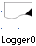
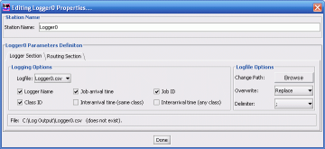

Logger Properties 
_______________________
A logging station (a.k.a logger) reads information flowing through it and writes it to a file. In the simplest way, it is a tool to understand and debug the traffic flow moving through the interesting part(s) of the model. For convenience, the station works like a routing station.
Simply place the logger station into the model, choose the parameter and trace the data as it passes through the model. By default
Set or change properties:
The logger is a simple tool to place and use. Double-click opens the configuration dialog:

The configuration properties of the Logger Section:
- Logging Options:
- The Logfile's name to use, either individual or merged (Logger0.csv or global.csv, respectively).
- The information to log (fields): Logger Name, Job Arrival Time (simulation units), unique Job ID, defined Class ID, Interarrival time of same class, Interarrival time of any class. These fields are found in the next section.
- Logfile Options:
- Browse button: allows changing the directory where logfiles are stored.
- Overwrite method to use when the logfile exists, and a new simulation needs to overwrite the file. Replace overwrites the file, append adds data to the end of the file.
- Delimiter chooses the character to separate between .
- Status displays the path and file-status of the logfile that is going to be written.
The configuration properties of the Routing Section are described in the Routing Station????.
Operation:
Once the logger is configured, running a simulation produces a logfile with the chosen fields. An example of logfile output:
LOGGERNAME;TIMESTAMP;JOBID;JOBCLASS;TIMEELAPSED_SAMECLASS;TIMEELAPSED_ANYCLASS
Logger0;0.199;1;Class0;0.000;0.199
Logger0;0.559;2;Class0;0.341;0.341
Fields:
As messages pass through the logger from one station to another, the logger can log the following information about the messages:
- Logger Name
, the name of the logger where the message occured. (e.g. Logger0)
- Job arrival time, this timestamp marks the current simulation time from start of simulation (not seconds).
- Job ID, the auto-generated unique sequence number of the message (e.g. 1,2,3...).
- Class ID, the name of "customer class" of message (e.g. Class0).
- Interarrival time (same class), is a time difference between when the same customer class passes through the logger.
- Interarrival time (any class), is a time difference between when any other message passes through the logger.